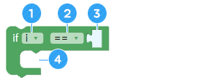
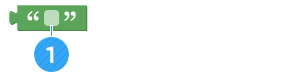
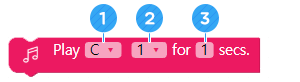

Robot dự báo thời tiết
• Hiểu cách mang dữ liệu thời tiết từ Internet.
• Chia sẻ dữ liệu quan trọng giữa các dữ liệu thời tiết.
• Bạn có thể thực hiện các chuyển động khác nhau tùy thuộc vào thời tiết và sử dụng AsomeBot để dự báo thời tiết.
A. Làm thế nào bạn có thể dự báo thời tiết?
Vệ tinh theo dõi chuyển động của đám mây và liên tục đo nhiệt độ và độ ẩm để dự báo thời tiết sẽ thay đổi như thế nào hôm nay hoặc ngày mai.
B. AsomeBot có thể dự báo thời tiết không?
Thảo luận với bạn bè và giáo viên của bạn về cách bạn có thể dự báo thời tiết với AsomeBot.

C. AsomeBot có thể tải xuống dữ liệu từ Internet, như thời tiết, nhiệt độ và độ ẩm. Chúng ta có thể sử dụng điều này để nói về thời tiết trong chuyển động và âm thanh của AsomeBot?
D. Khi nào, ở đâu và làm thế nào chúng ta có thể dự báo thời tiết?

A. Kết nối với internet (nhóm [INTERNET])
Xác định tên và mật khẩu của bộ định tuyến không dây mà AsomeBot sẽ được kết nối. Robot tải dữ liệu từ Internet, do đó, bộ định tuyến phải được kết nối với Internet.

① Nhập tên của bộ định tuyến Internet.
② Nhập mật khẩu của bộ định tuyến Internet.

Bạn có thể tìm tên của bộ định tuyến không dây bạn muốn sử dụng trong danh sách WiFi của máy tính bảng và kết nối với máy tính bảng của bạn.

B. Mở ổ cắm UDP (nhóm [INTERNET])
AsomeBot mở một cổng để giao tiếp qua Internet.

① Số cổng được sử dụng. Use the number as is without modification.
C. Lấy dữ liệu thời tiết (nhóm [INTERNET])
Tải xuống dữ liệu liên quan đến thời tiết từ Internet.
① Nhập tên của thành phố và quốc gia để tải xuống dữ liệu thời tiết.

Tên giá trị cho mỗi thành phố
Hà Nội Việt Nam: Hà Nội, VN
Seoul, Hàn Quốc: Seoul, KR
Los Angeles (Hoa Kỳ): LA, US
D. Đo khoảng cách (nhóm [SENSOR])
Với cảm biến siêu âm, robot đo khoảng cách của chướng ngại vật phía trước. Giá trị của khoảng cách đo được lưu trữ trong một tên biến ‘Cm’. Các cảm biến có thể báo cáo thời tiết khi một người đứng hoặc đi ở một khoảng cách vừa phải.
E. Lặp lại (nhóm [ADVANCE])
Lặp lại các lệnh trong khối nhiều lần mà bạn muốn.

① Xác định số lần lặp lại.
② Thêm các khối để lặp lại.
F. Repeat infinitely (nhóm [ADVANCE])
Chạy thứ tự các khối bên trong khối.

G. Nếu (nhóm [ADVANCE])
Thực thi khối bên trong khối khi điều kiện đầu vào là chính xác. Nếu điều kiện không chính xác, khối theo sau khối if sẽ được thực thi.
① Nhập một biến được sử dụng trong câu lệnh điều kiện. Giá trị mặc định là 'i' và thay đổi thành 'cm' khi sử dụng cảm biến siêu âm.
② Chọn bất đẳng thức mặc định để so sánh các điều kiện.
③ Nhập giá trị mặc định để sử dụng trong điều kiện. Bạn cần thêm các khối để xác định giá trị có điều kiện.
④ Thêm các khối được thực thi khi điều kiện đúng.
H. Data Block Character Value Block (nhóm [ADVANCE])
Bạn có thể sử dụng một trong hai khối sau cho giá trị có điều kiện của câu lệnh điều kiện.

Đối với khối dữ liệu, nhập và sử dụng giá trị bạn muốn so sánh.
① Nhập giá trị dữ liệu để so sánh với biến của câu lệnh điều khiển.

khối giá trị ký tự nên được sử dụng khi sử dụng giá trị ký tự cho giá trị có điều kiện hoặc sử dụng giá trị ký tự hoặc ký tự đầu vào nhận được từ Internet làm giá trị có điều kiện.
① Nhập các ký tự được sử dụng làm điều kiện.
Giá trị ký tự liên quan đến thời tiết
Giá trị ký tự liên quan đến thời tiết bạn có thể tải xuống từ Internet như sau:
Những ngày mưa: rain
Ngày nắng: sunny
Ngày tuyết rơi: snow
Tạo một chương trình phát ‘Do’ ‘Re’ ‘Mi’ theo thứ tự từng giây một nếu hôm nay giá trị thời tiết được tải xuống từ Internet là ‘sunny’.
I. Break (nhóm [ADVANCE])
Khi bạn gặp khối trong chương trình vòng lặp Vô hạn, dừng vòng lặp vô hạn và thực thi đoạn mã sau.

Tạo một chương trình thực hiện [Flap] 3 lần khi có một người hoặc vật có khoảng cách 50 cm trước AsomeBot.
J. Đứng nghiêm (nhóm [BASIC])
AsomeBot có thể ngã nếu chân của robot phải thực hiện các bước di chuyển quá nhiều. Đặt câu lệnh [Attention] giữa mỗi chuyển động sẽ giúp AsomeBot đứng nghiêm để tránh bị ngã.
K. Các điệu nhảy không có tùy chọn (nhóm [DANCE])
Thực hiện các động tác múa ba lê bằng cách Asomebot đứng các ngón chân.

AsomeBot ngọ nguậy tại chỗ.

AsomeBot vỗ chân.

AsomeBot thực hiện Warigari bằng đôi chân của mình.

AsomeBot nâng ngón chân lên. Nó là sự ngược lại của điệu nhảy ba lê.

AsomeBot biểu diễn điệu nhảy moonwalk.
L. Các điệu nhảy có tùy chọn (nhóm [DANCE])
Chọn hướng để di chuyển hướng chân AsomeBot trong tùy chọn của tất cả các bước nhảy.

Nâng một chân của AsomeBot và thực hiện chuyển động.

Nâng lên và gập lại một chân của AsomeBot.

Gấp một chân AsomeBot lại và vẫy một lần.
M. Chuông bật (nhóm [SOUND])
Làm cho chuông không thể sử dụng. Để tạo âm thanh với chuông, bạn phải sử dụng khối này. Lưu ý rằng nếu khối này không được sử dụng trước tiên, bạn không thể phát nhạc.

N. Chuông tắt (nhóm [SOUND])
Điều này cho phép bạn sử dụng các bộ phận khác một lần nữa sau khi sử dụng chuông. Bạn không thể sử dụng các bộ phận khác trong khi sử dụng chuông. Sau khi phát nhạc, khối phải được sử dụng để chạy các thành phần khác.

O. Play for (nhóm [SOUND])
Sử dụng khối này, bạn có thể tạo ra âm thanh bạn muốn bằng tần số.
① Chọn thang âm từ danh sách mà bạn muốn chơi.
② Chọn quãng của thang âm mà bạn muốn chơi.
③ Xác định thời gian phát nhạc trong bao lâu.
Tạo âm thanh các âm Do, Mi và Sol trong quãng 4 trong khoảng thời gian 0.3 giây mỗi âm.
A. Luật chơi
① Hãy nói về cách thức và thời điểm bắt đầu dự báo thời tiết.
② Hãy nói về cách AsomeBot có thể dự báo thời tiết.
③ Bên cạnh thời tiết, hãy nói về những thông tin khác (nhiệt độ, độ ẩm và bụi) có thể được dự báo.
④ Ngoài nước, hãy nói về những dịch vụ dữ liệu khác mà bạn có thể tải xuống và dự báo từ Internet.
B. Thuật toán
① Tải xuống dữ liệu thời tiết từ Internet.
② Phát triển các chuyển động để chạy dựa theo thời tiết.
③ Quyết định những điều kiện nên được dự báo khi điều kiện được đáp ứng và phát triển một chương trình.
④ Phát triển một chương trình thực hiện chuyển động cho thời tiết ngày hôm nay khi điều kiện được đáp ứng.
⑤ Thêm các chương trình để làm cho nó thú vị hơn.
C. Tạo và hiển thị một chương trình dự báo thời tiết